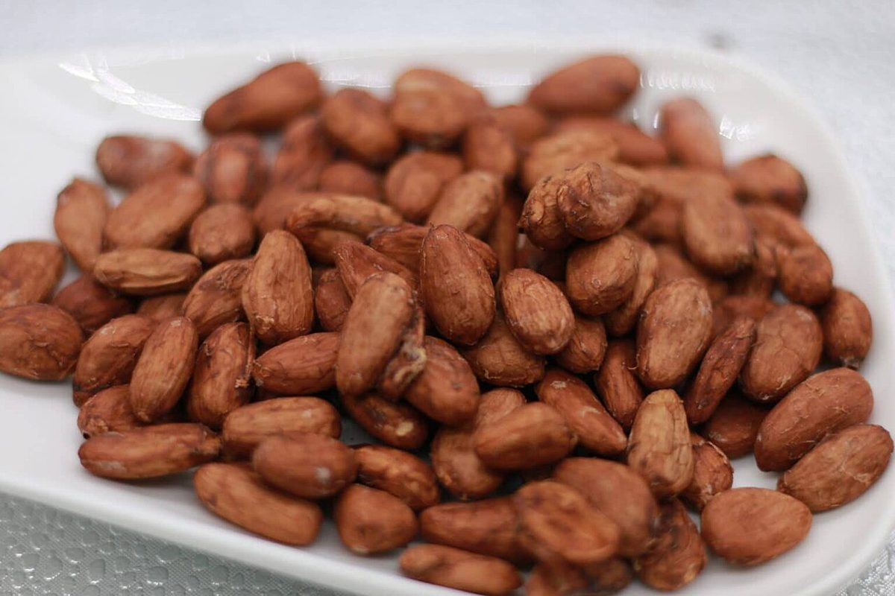
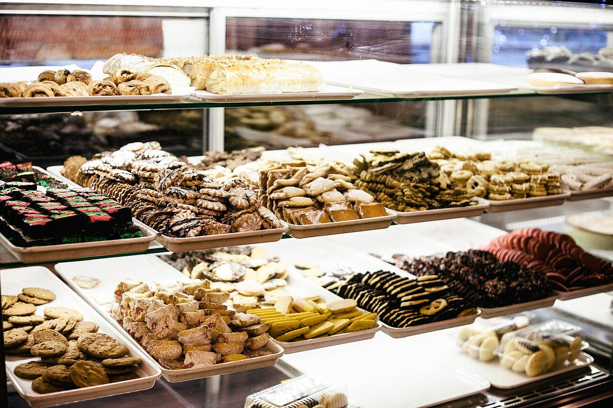

お菓子・コーヒーのイメージ写真(フリー素材のイメージです)
制作側の連想
精米機の部位を、配置図にしてみる
このサイトは、機械の取扱説明書にある部位図をまねて作りました。六つの部位に番号をふり、上の図と並べています。制作側の連想で、お店の理念・由来とは無関係です。実際の機械の仕様を示すものでもありません。
凡例
六つの部位
- 1投入口(ホッパー)玄米を上から入れる、広い口の部分。
- 2精米室玄米をこすり合わせて削る、機械の中心になる部屋。
- 3米ぬか受け削れた粉を下にためておく引き出し。
- 4排出口仕上がった米が外へ出ていく出口。
- 5操作つまみ動かす強さや時間を合わせる、手で回すつまみ。
- 6モーター精米室の中の部品を回す、動力になる部分。




お菓子・コーヒーのイメージ写真(フリー素材のイメージです)
ご案内
お店のこと(確認できたものだけ)
| 所在地 | 〒378-0415 群馬県利根郡片品村鎌田4613-2 |
|---|---|
| 電話 | 準備中 |
| 営業時間 | 準備中 |
| 定休日 | 準備中 |
| ご予約 | 準備中 |
| 駐車場 | 準備中 |
| SNS | Instagram @lammin.n |


パンのイメージ写真(フリー素材のイメージです)